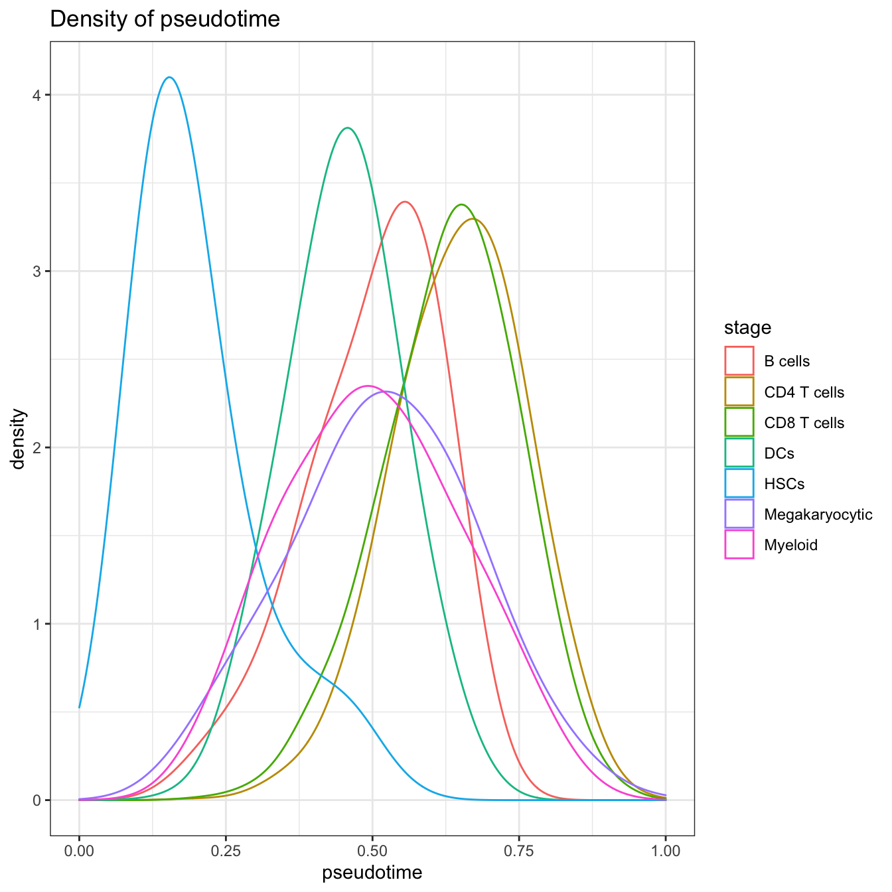
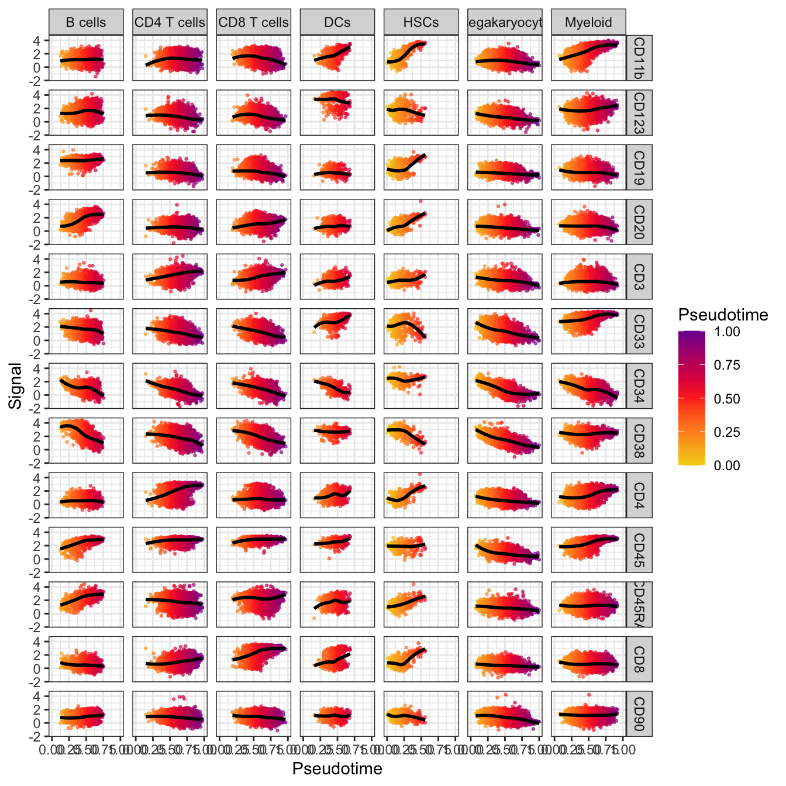
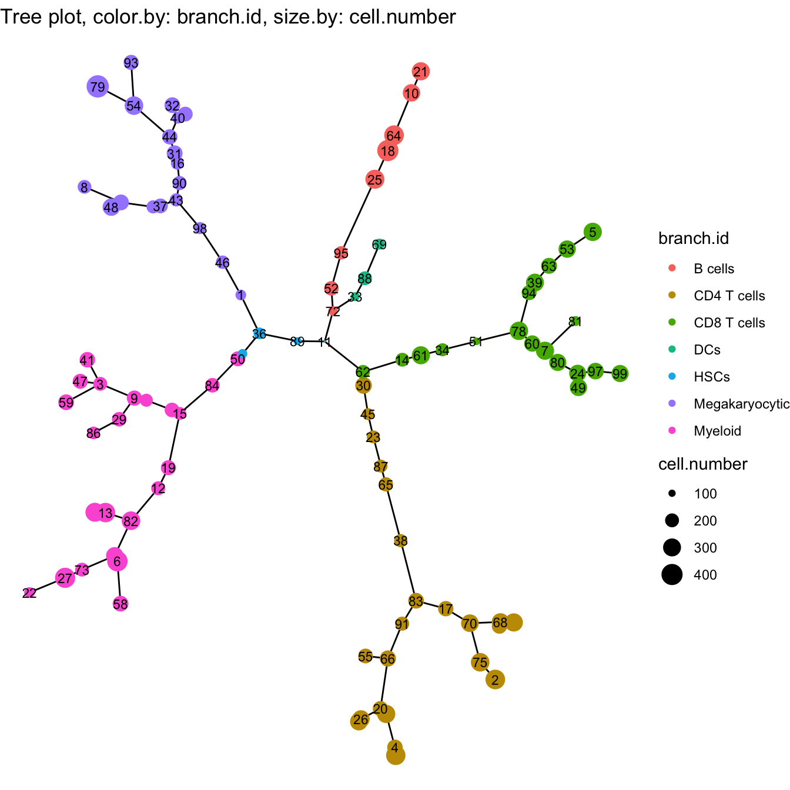

Chapter 4 Analysis of TI
This chapter will show you the feature extraction and cell state refinement, including pseudotime estimation and intermediate state cell analysis.
4.1 Pseudotime
In this part, we will use the CYT object generated in Trajectory Inference chapter 3.
The algorithm used to estimate pseudotime was based on prior knowledge derivation. The steps to estimate pseudotime could be divided into four parts.
Step 1, the definition of root cells. A root cell was the initiation site of differentiation or the start point of the biological process. The pseudotime in root cells was first set up to zero.
Step 2, construction of the graph to connect all cells using the k-nearest neighbors (KNN) algorithm.
Step 3, calculation of the distance from root cells to all other cells by shortest paths.
Step 4, calculation of pseudotime of each cell.
Cytotree provides a convenient way to calculate pseudotime.
# Set HSPCs as root cells
cyt <- defRootCells(cyt, root.cells = c(36,89,11))
cyt <- runPseudotime(cyt, dim.type = "raw")And Cytotree provides a series of visualization functions to illustrate pseudotime.
# Rename stage in meta.data
cyt@meta.data$stage <- cyt@meta.data$branch.id
# Visualization for pseudotime
plot2D(cyt, item.use = c("tSNE_1", "tSNE_2"), category = "numeric",
size = 1, color.by = "pseudotime") +
scale_colour_gradientn(colors = c("#F4D31D", "#FF3222","#7A06A0"))# Visualization for pseudotime in Tree
plotTree(cyt, color.by = "pseudotime", cex.size = 1) +
scale_colour_gradientn(colors = c("#F4D31D","#FF3222","#7A06A0"))# Visualization for pseudotime density
plotPseudotimeDensity(cyt, adjust = 2)
# Visualization for the correlation of pseudotime and markers
plotPseudotimeTraj(cyt, var.cols = TRUE) +
scale_colour_gradientn(colors = c("#F4D31D", "#FF3222","#7A06A0"))## `geom_smooth()` using formula 'y ~ x'
4.2 Intermediate States
After pseudotime estimation, all cells were reordered by pseudotime and the KNN network could be modified based on pseudotime. When the pseudotime of cell i was greater than cell j, the path from cell i to cell j could be accessed.
To calculate intermediate state cells, the leaf cells need to be defined first. The leaf cells were the terminal site of differentiation. During the biological process, the differentiation was always multidirectional. The intermediate state cells were the cells that occurred most likely in the shortest path between leaf cells and root cells based on the modified KNN network.
##### View Trajectory Tree
plotTree(cyt, color.by = "branch.id", show.node.name = TRUE, cex.size = 1) 
###### Intermediate state cells for CD8 T cells
cyt <- defLeafCells(cyt, leaf.cells = c(99,97))
cyt <- runWalk(cyt, verbose = TRUE)## 2020-11-08 20:00:58 Calculating walk between root.cells and leaf.cells .## 2020-11-08 20:01:02 Generating an adjacency matrix.## 2020-11-08 20:02:29 Walk forward.## 2020-11-08 20:02:36 Calculating walk completed.cyt@meta.data$traj.value.log.CD8T <- cyt@meta.data$traj.value.log
### fetch plot information
plot.meta <- fetchPlotMeta(cyt, markers = colnames(cyt.data))
# heatmap for CD8 T cells
library(pheatmap)
plot.meta.sub <- plot.meta[which(plot.meta$traj.value.log.CD8T > 0), ]
plot.meta.sub <- plot.meta.sub[order(plot.meta.sub$pseudotime), ]
pheatmap(t(plot.meta.sub[, colnames(cyt.data)]), scale = "row",
cluster_rows = T, cluster_cols = F, cluster_method = "ward.D",
color = colorRampPalette(c("blue","blue","blue","white","red","red","red"))(100),
fontsize_col = 0.01)